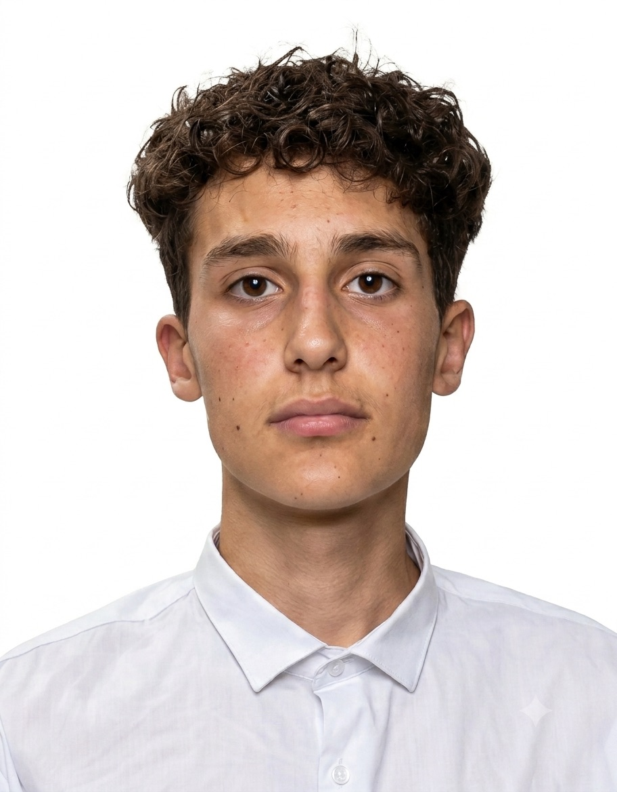

Mi chiamo Michele Moreschini, ho 17 anni e vivo ad Ala (TN). Sono uno studente appassionato di informatica più specificamente di reti; Sto frequentando il 4° anno del percorso tecnico informatico presso l'Enaip di Villazzano. Lo scorso anno ho conseguito la qualifica professionale di operatore informatico.
SUCCESIVO